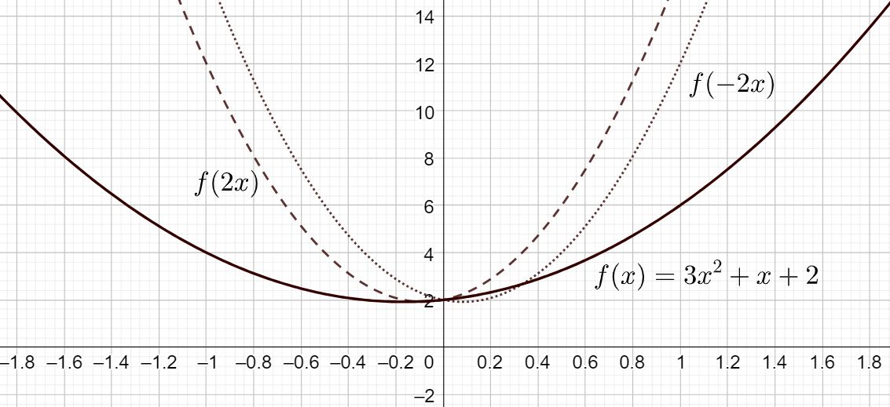

Funktioista
Contents
Funktioista#
Funktio yhdistää luvun yksikäsitteisesti johonkin toiseen lukuun. Usein funktiota merkitään \(f(x)\), missä \(f\) on funktion nimi ja \(x\) on funktion muuttuja. Funktion lauseke määrittelee sen, mitä luvulle \(x\) tapahtuu. Esimerkiksi funktion \(f(x)=3x+1\) tuloksena on luku \(x\) kerrottuna luvulla 3, ja sitten vielä lisätään luku 1. Sijoittamalla luvun \(x\) paikalle eri arvoja saadaan vastaavia funktion arvoja: \(f(0)=1, f(1)=4, f(2)=7, \dots\). On myös sellaisia funktioita, jotka eivät riipu ollenkaan mistään muuttujasta, esimerkiksi \(f(x)=7\). Jotkut funktiot taas ovat riippuvaisia usemmasta kuin yhdestä muuttujasta, esim. \(f(x,y)=2x+3y\). Tarkastellaan aluksi vain yhden muuttujan funktioita \(f(x)\).
Määrittelyjoukko ja arvojoukko#
Jokaisella funktiolla on sille ominainen lukujoukko, josta funktion lausekkeeseen sijoitettavat luvut \(x\) voidaan valita. Tästä joukosta käytetään nimitystä määrittelyjoukko. Funktio on määritelty vain niillä luvuilla, jotka kuuluvat sen määrittelyjoukkoon.
Määrittelyjoukko on usein koko reaalilukujen joukko. Poikkeuksia on esimerkiksi seuraavissa tapauksissa:
Funktio kuvastaa sellaista ilmiötä, johon muuttujalle on järkevää valita vain tietynlaisia arvoja. Esim. jos \(f(x)\) kuvaa koiranpennun painoa, kun se on \(x\) viikkoa vanha, niin muuttujan \(x\) arvoksi ei ole järkevää valita negatiivisia lukuja eikä toisaalta myöskään hyvin suuria lukuja.
Funktion lausekkeessa \(x\) esiintyy nimittäjässä siten, että nimittäjän arvoksi on jollakin luvun \(x\) arvolla mahdollista tulla nolla. Esimerkiksi jos funktion lauseke on \(f(x)=\frac{2}{x-3}\), niin lausekkeeseen ei voi sijoittaa lukua \(x=3\). Määrittelyjoukkoon kelpaavat reaalilukujen joukosta kaikki muut luvut paitsi 3.
Funktion lausekkeessa \(x\) esiintyy parillisen juuren sisällä. Parilliset juuret on määritelty vain positiivisille reaalijuurille. Jos esimerkiksi funktion lauseke on \(f(x)=\sqrt{x+2}\), niin luvun \(x\) pitää olla vähintään 2, sillä tulee olla \(x-2 \geq 0\).
Arvojoukko on se lukujoukko, johon kuuluvat kaikki ne luvut, jotka funktion lauseke tuottaa, kun funktioon on sijoitettu kaikki mahdolliset määrittelyjoukon luvut. Arvojoukkokin voi olla koko reaalilukujen joukko. Rajoituksia voi olla esimerkiksi silloin, kun funktion lausekkeessa on polynomi, jolla on olemassa pienin tai suurin mahdollinen arvo. Esimerkiksi funktion \(f(x)=x^2-10\) arvo ei millään \(x\):n arvolla voi olla pienempi kuin -10, sillä olipa luku \(x\) mikä tahansa, niin varmasti \(x^2\) on vähintään nolla.
Lukujoukkoja voidaan ilmaista eri tavoin:
Merkintä \(x \in \Re, x \neq 3\) tarkoittaa, että \(x\) voi olla mikä tahansa reaaliluku mutta ei 3.
Merkintä \(x=[0, 10]\) tarkoittaa samaa kuin \(0 \leq x \leq 10\), eli \(x\) voi olla lukujen 0 ja 10 välissä, ja myös nämä välin päätepisteet ovat hyväksyttyviä.
Merkintä \([0,10[\) tarkoittaa joukkoa, joka sisältää kaikki vähintään nollan suuruiset, mutta lukua 10 pienemmät luvut, eikä itse lukua 10.
Merkintä \(x \in ]-\infty, 2]\) tarkoittaa samaa kuin \(x \leq 2\). Äärettömän ja miinus äärettömän viereinen hakasulku on aina “väärin päin”, eli luku \(x\) ei voi olla äärettömän suuri tai pieni.
Esimerkki
Määritä seuraavien funktioiden määrittely- ja arvojoukot:
a) \(f(x)=\frac{3+x}{x}\), b) \(g(x)=x^2+1\) ja c) \(h(x)=\sqrt{2x-12}\).
Ratkaisu
a) Funktion \(f(x)=\frac{3+x}{x}\) lausekkeeseen ei voi sijoittaa lukua 0, sillä nollalla jakamista ei ole määritelty. Funktion määrittelyjoukko koostuu siis kaikista reaaliluvuista paitsi luvusta 0. Tätä joukkoa voidaan merkitä \(x \in \Re, x \neq 0\). Arvojoukkoon kuuluvat kaikki reaaliluvut.
b) Funktion \(g(x)=x^2+1\) lausekkeeseen voidaan sijoittaa mikä tahansa luku \(x\), joten funktion määrittelyjoukko on reaalilukujen joukko \(\Re\). Sen sijaan arvojoukko voi koostua vain luvusta 1 ja sitä suuremmista luvuista, sillä \(x^2 \geq 0\) millä tahansa arvolla \(x\). Arvojoukkoa voidaan merkitä \([1, \infty[\).
c) Funktion \(h(x)=\sqrt{2x-12}\) neliöjuuren sisällä olevan luvun tulee olla vähintään nolla, sillä neliöjuuri on määritelty vain positiivisille reaaliluvuille. Tulee siis olla \(2x-12 \geq 0\), josta saadaan ehto \(x \geq 6\). Määrittelyjoukon alaraja puolestaan on neliöjuuri tästä pienimmästä mahdollisesta luvun \(2x-12\) arvosta, eli \(\sqrt{0}=0\). Niinpä määrittelyjoukko on \(x \geq 6\) ja arvojoukko \(f(x) \geq 0\).
Funktion kasvavuus ja vähenevyys#
Oletetaan, että funktio \(f(x)\) on määritelty välillä \(a \leq x \leq b\). Funktio \(f(x)\) on aidosti kasvava, jos \(f(x_1) < f(x_2)\) aina, kun \(a \leq x_1 < x_2 \leq b\). Jos funktio on pelkästään kasvava, eikä aidosti kasvava, niin joissakin pisteissä on myös mahdollista olla \(f(x_1)=f(x_2)\), vaikka \(x_1 < x_2\).
Vastaavasti \(f(x)\) on aidosti vähenevä, jos \(f(x_2) < f(x_1)\) aina, kun \(a \leq x_1 < x_2 \leq b\). Vähenevässä funktiossa joissakin pisteissä on myös mahdollista olla \(f(x_2)=f(x_1)\), vaikka \(x_1 < x_2\).
Kasvavuutta ja vähenevyyttä voidaan myöhemmin tutkia funktion derivaatan avulla, mutta aluksi sitä tarkastellaan suoraan funktioiden lausekkeista. Tällöin sijoitetaan lausekkeisiin mielivaltaiset luvut \(x_1\) ja \(x_2\) olettaen, että \(x_1\) ja \(x_2\), ja tarkastellaan funktion arvoista muodostuvaa epäyhtälöä.
Esimerkki
Osoita, että
a) \(f(x)=-4x+6\) on vähenevä,
b) \(f(x)=\frac{x}{x+1}\) on kasvava, kun \(x \geq 0\).
Ratkaisu
a) Valitaan mielivaltaiset luvut \(x_1, x_2\) siten, että \(x_1 < x_2\). Jos funktio \(f(x)\) on vähenevä, niin tulee olla \(f(x_1) \geq f(x_2)\). Siis
\(-4 x_1 + 6 \geq -4x_2 +6\)
\(-4 x_1 \geq -4 x_2\)
Epäyhtälön molemmat puolet pitäisi jakaa luvulla -4. Kun epäyhtälöä kerrotaan tai jaetaan negatiivisella luvulla, niin vertailumerkin suunta muuttuu. Siis saadaan tulos \(x_1 \leq x_2\). Tulos on tosi, sillä tällainen oletus tehtiin muuttujien arvoille.
b) Olkoot luvut \(x_1, x_2\) mielivaltaisia siten, että \(x_1 < x_2\) ja \(x_1 \geq 0, x_2 \geq 0\). (Huomautus: myös nollaa pienemmät luvut, paitsi -1, voisivat kuulua funktion määrittelyjoukkoon, mutta tässä tarkastellaan vain positiivisia lukuja.)
Jos funktio \(f(x)\) on kasvava, niin tulee olla \(f(x_1) \leq f(x_2)\). Siis
\(\frac{x_1}{x_1+1} \leq \frac{x_2}{x_2+1}\)
\(\frac{x_1}{x_1+1} - \frac{x_2}{x_2+1} \leq 0\)
\(\frac{(x_2+1)x_1}{(x_1+1)(x_2+1)} - \frac{(x_1+1)x_2}{(x_1+1)(x_2+1)} \leq 0\)
\(\frac{x_2 x_1 + x_1 -x_1 x_2 -x_2}{(x_1+1)(x_2+1)} \leq 0\)
\(\frac{x_1-x_2}{(x_1+1)(x_2+1)}\leq 0\)
Epäyhtälö on tosi, sillä murtolausekkeen nimittäjä on aina positiivinen ja osoittaja on negatiivinen, sillä valittiin \(x_1 < x_2\). Niinpä funktio on kasvava ja tarkemmin jopa aidosti kasvava.
Funktion parillisuus ja parittomuus#
Funktio \(f(x)\) on parillinen, jos \(f(-x)=f(x)\). Funktio saa siis saman arvon sekä positiivisella että negatiivisella muuttujan arvolla, kunhan vain muuttujan itseisarvo on sama. Tällaisen funktion kuvaaja on symmetrinen \(y\)-akselin suhteen, kuten esimerkiksi funktiolla \(f(x)=5x^2\). Jos kuvaaja taitettaisiin pystyakselin kohdalta kaksinkerroin, kuvaajan puolikkaat osuisivat päällekkäin.
Funktio \(f(x)\) on pariton, jos \(f(-x)=-f(x)\). Toisin sanoen jos muuttujan paikalle vaihdetaan sen vastaluku, niin funktion arvokin muuttuu vastaluvukseen. Tällaisen funktion kuvaaja on sellainen, että vasen puoli on vaaka-akselin ympäri käännetty peilikuva oikeasta puolesta. Esimerkki tällaisesta funktiosta on \(f(x)=2x^3\).

Suuri osa funktioista ei ole parillisia eikä parittomia. Funktion parillisuus tai parittomuus selvitetään tarkastelemalla funktion lausekkeita \(f(x)\), \(f(-x)\) ja \(-f(x)\), siis sijoittamatta luvun \(x\) paikalle mitään arvoa, ja vertaamalla niitä keskenään.
Esimerkki
Tarkastele seuraavien funktioiden parillisuutta ja parittomuutta.
a) \(f(x)=x^5-3x\)
b) \(f(x)=x^4-3x^2\)
c) \(f(x)=x^2+x+2\)
Ratkaisu
a) \(f(-x)=(-x)^5-3(-x) = -x^5+3x = -(x^5-3x)=-f(x)\), joten funktio on pariton
b) \(f(-x)=(-x)^4-3(-x)^2 = x^4-3x^2=f(x)\), joten funktio on parillinen
c) \(f(-x)=(-x)^2-x+2=x^2-x+2\)
Tulos ei ole sama kuin \(f(x)\) eikä \(-f(x)=-x^2-x-2\), joten funktio ei ole pariton eikä parillinen
Yhdistetty funktio#
Olkoot funktiot \(f(x)\) ja \(g(x)\). Näistä voidaan muodostaa yhdistetty funktio, jota merkitään \((f \circ g) (x)\) siten, että lasketaan ensin funktion arvo \(g(x)\) ja sijoitetaan se sitten funktion \(f(x)\) muuttujaksi. Toisin sanoen \((f \circ g) (x) = f(g(x))\).
Funktiota \(f\) nimitetään ulkofunktioksi ja funktiota \(g\) sisäfunktioksi. Yleisesti ottaen funktioiden järjestyksellä on väliä, siis \((f \circ g)(x) = (g \circ f)(x)\) pitää paikkansa vain erikoistapauksissa.
Esimerkki
Muodosta \((f \circ g) (x)\) ja \((g \circ f) (x)\), kun \(f(x)=3x\) ja \(g(x)=x+1\).
Laske lisäksi arvot \((f\circ g) (2)\) ja \((g \circ f) (2)\).
Ratkaisu
\((f\circ g) (x)= 3(x+1)=3x+3, (f\circ g) (2) = 6+3 = 9\)
\((g \circ f) (x) = (3x) + 1 = 3x+1, (g \circ f) (2) = 6+1 = 7\)
Esimerkki
Muodosta \((f \circ g) (x)\) ja \((g \circ f) (x)\), kun \(f(x)=2x\) ja \(g(x)=\frac{x}{3}\).
Laske lisäksi arvot \((f\circ g) (1)\) ja \((g \circ f) (1)\).
Ratkaisu
\((f\circ g) (x)= 2\cdot \frac{x}{3} = \frac{2x}{3}, (f\circ g) (1) = \frac{2\cdot 1}{3} = \frac{2}{3}\)
\((g \circ f) (x) = \frac{2x}{3}, (g \circ f) (1) = \frac{2\cdot1}{3} =\frac{2}{3}\)
Käänteisfunktio#
Funktiolla \(f(x)\) voi olla olemassa käänteisfunktio \(f^{-1}(x)\). Käänteisfunktio on sellainen funktio, että \((f \circ f^{-1}) (x) = x\). Käänteisfunktio on olemassa ainoastaan silloin, kun funktio on aidosti kasvava tai aidosti vähenevä. Tällöin funktio voi saada tietyn arvon vain yhdellä muuttujan arvolla. Esimerkiksi funktiolla \(f(x)=x^2\) ei ole käänteisfunktiota, sillä esimerkiksi \(f(-2)\) ja \(f(2)\) tuottavat saman arvon \(4\). Tällöin ei ole olemassa yksikäsitteistä muuttujan arvoa \(x\), joka vastaisi funktion arvoa \(4\).
Käänteisfunktion lausekkeen saa selville seuraavasti: merkitään \(f(x)=y\) ja sitten ratkaistaan funktion lausekkeesta muuttuja \(x\). Tämä on sama asia kuin \(f{-1}(x)\). Lopuksi voidaan vaihtaa käänteisfunktion lausekkeeseen muuttujan \(y\) paikalle takaisin muuttuja \(x\).
Esimerkki
Määritä seuraavien funktioiden käänteisfunktiot:
a) \(f(x)=3x+2\)
b) \(f(x)= 4 x^3\)
Ratkaisu
a) Merkitään \(y=3x+2\) ja ratkaistaan tästä \(x=\frac{y-2}{3}\). Siis \(f^{-1}(x)=\frac{x-2}{3}\).
Tarkistetaan vielä laskemalla \((f \circ f^{-1}) (x)\):
\((f \circ f^{-1}) (x) = 3(\frac{x-2}{3})+2 = x-2+2 = x\)
b) Merkitään \(y=4x^3\) ja ratkaistaan tästä \(x=\sqrt[3]{\frac{y}{4}}\). Siis \(f^{-1}(x)=\sqrt[3]{\frac{x}{4}}\).
Tarkistetaan vielä laskemalla \((f \circ f^{-1}) (x)\):
\((f \circ f^{-1}) (x) = 4(\sqrt[3]{\frac{x}{4}})^3 = 4 \frac{x}{4} = x\)
Funktion siirto, peilaus ja skaalaus#
Funktion siirto tarkoittaa käytännössä funktion kuvaajan siirtoa koordinaatistossa vasemmalle, oikealle, ylös tai alas.
Laskennallisesti funktion siirto vaakasuunnassa \(a\) yksikön verran tapahtuu lisäämällä muuttujan arvoon luku \(a\). Jos \(a < 0\), niin kuvaaja siirtyy oikealle, ja jos \(a > 0\), kuvaaja siirtyy vasemmalle. Siirtoa vaakasuunnassa voidaan kuvata siirtofunktiolla \(s(x)=x+a\), jolloin siirretty funktio on yhdistetty funktio \((f\circ s)(x)\) eli \(f(s(x))\). Kuvassa on esimerkki vasemmalle ja oikealle siirretystä funktiosta.
Pystysuuntainen siirto tapahtuu lisäämällä funktion lausekkeeseen haluttu siirron määrä \(b\). Jos \(b > 0\), niin kuvaaja siirtyy ylöspäin, ja jos \(b < 0\), niin kuvaaja siirtyy alaspäin.
Esimerkki
Siirrä funktiota \(f(x)=3x^2+2x\) 4 askelta oikealle ja 2 askelta ylöspäin.
Ratkaisu
Siirto oikealle tapahtuu funktion \(s(x)=x-4\) avulla. Oikealle siirretty funktio on \(f(s(x))=f(x-4)=3(x-4)^2+2(x-4) \) ja sievennetyssä muodossa \(f(x)= 3(x^2-8x+16)+2(x-4) = 3x^2-24x+48+2x-8 = 3x^2-22x+40\). Lisäksi funktioon pitää lisätä ylöspäin nostamisen määrä 2, joten siirretty funktio on \(h(x)=3x^2-22x+42\).
Funktion skaalaus eli venytys voidaan suorittaa funktiolla \(v(x)=ax\). Jos halutaan skaalata kaikki funktion arvot kertoimella \(a\), niin skaalattu funktio saadaan laskemalla \((v \circ f) (x)\). Alkuperäisen funktion on siis oltava yhdistetyn funktion sisäfunktiona. Skaalauksen yhteydessä funktiolle tapahtuu myös peilaus \(x\)-akselin suhteen, jos skaalauskerroin on negatiivinen eli \(a < 0\).
Jos taas lasketaan \((f \circ a) (x)\), saadaan funktio, jota on venytetty vaaka-akselin suunnassa. Esimerkiksi suora \(f(x)=6x+1\) skaalattuna vaakasuunnassa kertoimella \(2\) olisi \(f(2x)=6\cdot 2x+1=12x+1\) eli tuloksena oleva funktio kasvaa kaksi kertaa niin nopeasti kuin alkuperäinen funktio. Lisäksi jos tässä tapauksessa \(a < 0\), niin funktion kuvaaja peilautuu \(y\)-akselin suhteen.

Esimerkki
Tarkastele funktiota \(f(x)=2x+1\) ja skaalausfunktioita \(v(x)=3x\) ja \(w(x)=-3x\).
Laske \(f \circ v\), \(v \circ f\), \(f \circ w\) ja \(w \circ f\).
Ratkaisu
\((f \circ v)(x) = 2(3x)+1 = 6x+1\)
\((v \circ f)(x) = 3(2x+1) = 6x+3\)
\((f \circ w)(x) = 2(-3x)+1 = -6x+1\)
\((w \circ f)(x) = -3(2x+1) = -6x-3\)
Piirrä funktioiden kuvaajat esimerkiksi GeoGebralla, niin näet, mitä eri versiot yhdistetystä funktiosta käytännössä tekevät funktiolle.